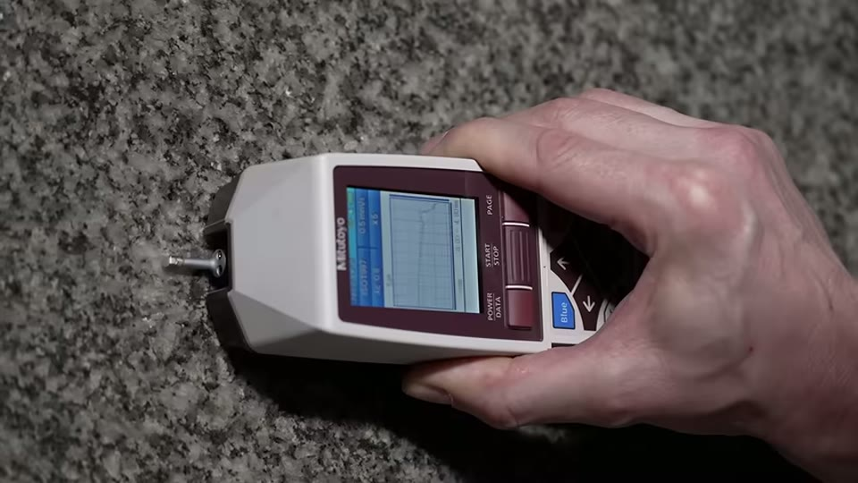
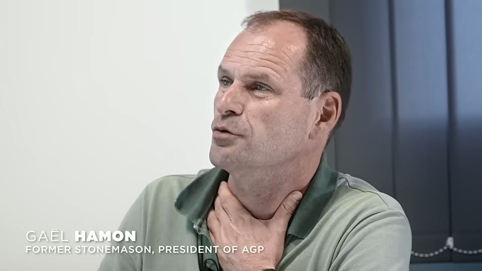
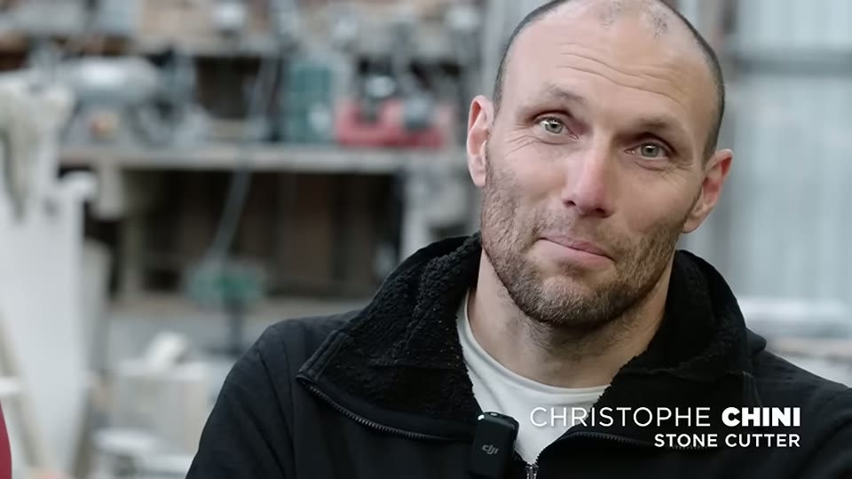
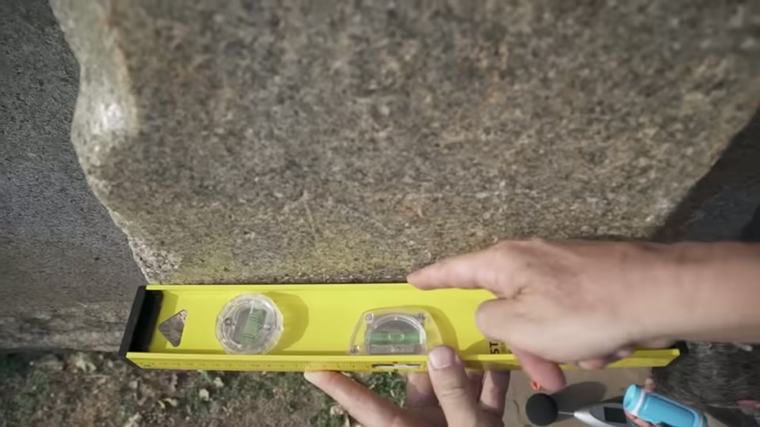
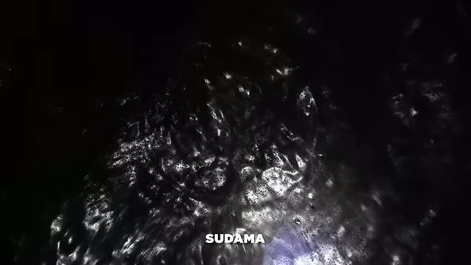
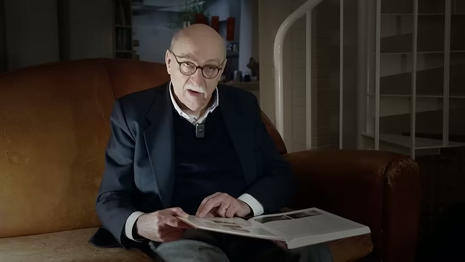
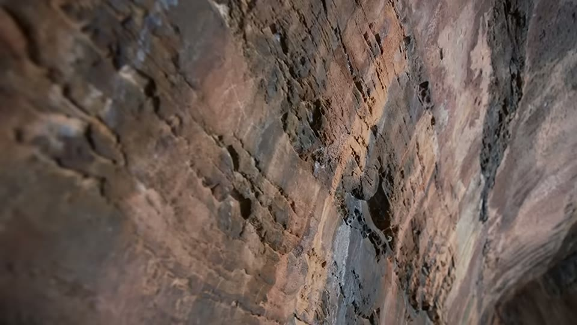
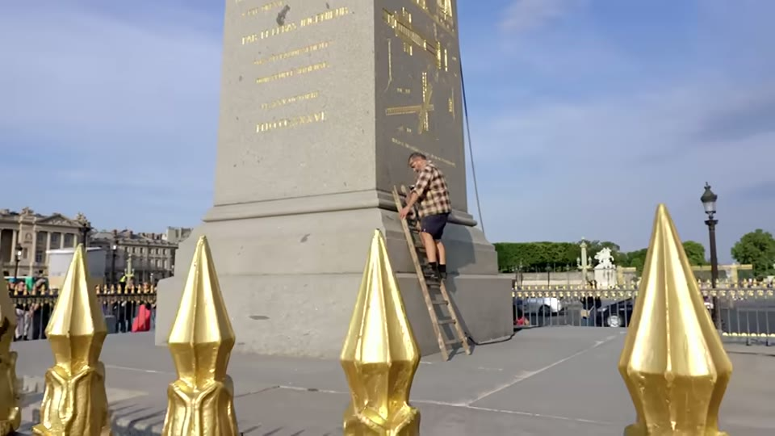
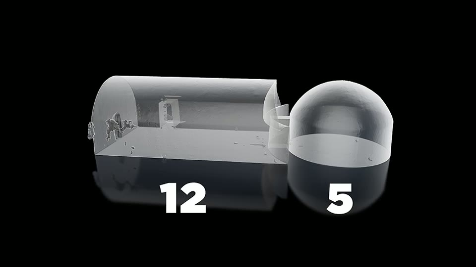
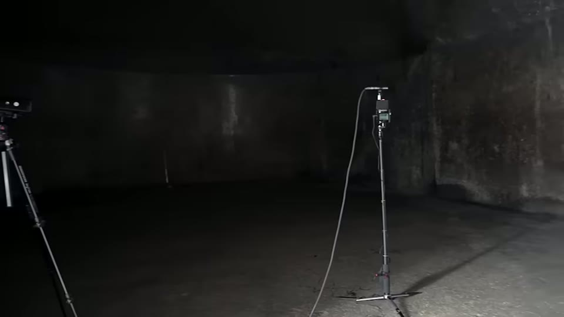

BAM Investigations
Barabar, the Archaeological Site of the Future
Patrice Pouillard · 122 min · watch on YouTube · summarised 2026-08-25
The third and longest of the BAM films, and the one where the measurements arrive with their units, their instruments and their controls attached. Where the first two films asserted precision and the second reported a scan result without saying what tolerance it was judged against, this one publishes the tolerance, names the parameter, identifies the instrument by model number, brings in the manufacturer's own engineer to explain what it reports, and measures three control surfaces before measuring the caves.
It also does something rarer: it interviews an academic who does not accept its conclusion, quotes him at length, and states the fact plainly on screen — "Harry Falk's presence in this film does not imply that he agrees with our hypothesis."
The seven chambers
Barabar and Nagarjuni sit about 40 km from Bodh Gaya in Bihar, and are a UNESCO world heritage site. The film walks all seven 6:39–13:47, using the chamber names from its own earlier film while noting "they're probably not original".
At Barabar, cut into a granite outcrop geologists call a whale's back: Karan Chaupar, a trapezoidal passage into a rectangular chamber with a rock-cut bench and a cylindrical vault; Sudama, two rooms — a rectangular chamber with a curved end wall opening into a hemispherical dome; Lomas Rishi, the only one with a carved porch, and unfinished inside; and Vishvakarma (Visva Zopri in the narration), isolated and also unfinished.
At Nagarjuni, 1.6 km away in a granitic chaos of piled boulders: Gopika, a large oval chamber with a fissure running its length; Vadathika, the brightest, with sloping walls and a cylindrical vault; and Vapiyaka, a fully curved hall the film describes as slipper-shaped.
Five finished, two unfinished.
Smooth is not flat
The film spends time on a distinction that turns out to carry the whole argument 14:09–14:50. A dressed surface has been struck roughly level. Smooth means sanded and polished — soft to the touch. Flat means geometrically flat. A surface can be either without being the other. Barabar's walls, it argues, are both, which it says is unique in cave work.
The roughness measurements, with controls
This is the section that separates this film from its predecessors 14:50–19:49.
The instrument is named: a Mitutoyo SJ-210. The parameter is named: Rz — "the smaller the value the smoother and more flawless the surface". And the person explaining it is Mikaël Tuton, an engineer from the manufacturer. (The surname is taken from narration and may be spelled otherwise.)
Then the controls, which the earlier films never ran:
| surface | Rz |
|---|---|
| industrially polished granite slab ("a marble", machine-rectified) | 9.492 |
| a second machine-polished slab | measured on camera |
| window glass | measured on camera |
| the pedestal cut for the Luxor Obelisk, Place de la Concorde, 1836 | 60, 47, 25 |
Against those, roughly 80 measurements taken at Barabar in April 2023, the best of them in Sudama, which the narration puts at "barely more than window glass and almost 20 times more precise than this industrially polished slab of granite".

The control measurement, run before the caves were measured.

The reading the film reports from the caves.
Two caveats the film raises itself, both of which cut against a simple reading. The Concorde pedestal was polished horizontally, with gravity, which it calls "absolutely uncomparable" to vertical walls. And Tuton's own point is that Rz 9.492 is not a failure — it is "more than sufficient to check the conformity of certain industrial parts".
Most importantly, the film does not conclude machines:
"At this stage of the investigation small imperfections seem to point towards the use of tools guided by the human hand to an astonishing level of precision."
The scan, and the number that was missing
The 2017 attempt to measure the chambers with a laser rangefinder failed — the sloping walls threw the beam. So Art Graphique et Patrimoine was brought in to scan all seven 39:06–41:10. The firm's head appears on camera and is captioned: Gaël Hamon, former stonemason, president of AGP — which is worth noting in both directions. The survey is no longer an anonymous claim; and the man presenting its results is credited as a stonemason rather than as a surveyor or a metrologist.
The method is stated: two days on site, three to six scans per chamber, one point per millimetre, a precision of about ±2.5 mm, then the point clouds assembled per chamber. AGP's own caveats are included — noise from highly reflective surfaces, and apparent striations that "don't exist in reality" and are measurement artefacts at around half a millimetre.
And then the figure that the previous film reported without: symmetry is counted as points landing in the same place within a 2.5 mm tolerance. The analysis is a 40-page dossier, and the film reads out its results chamber by chamber 43:15–47:35:
| chamber | points | large walls | symmetry within 2.5 mm |
|---|---|---|---|
| Vapiyaka | 132 M | 87°, varying 0.1° | 69.7% lengthwise · 75.1% widthwise |
| Karan Chaupar | 132 M | 87.3° | 77.6% lengthwise · 67.8% widthwise |
| Vadathika | 110 M | 83.7° curved end wall | 57.7% |
| Gopika | 350 M | 87°, curved by under 6 cm | 62% lengthwise |
| Sudama | 232 M | 87.1° | 61.1% |
With the details: floor rectangles with "virtually no deformation" and right angles to a tenth of a degree; entrance passages positioned by geometric construction — centred on the short side, or at the intersection of a square or a circle built on it; vaulted ceilings built of one, three, or several interlocking centred arcs; Gopika's floor carrying arcs of 120 m radius.

Who states the symmetry figure, and the tolerance attached to it.
The presentation slides carry something the previous film's did not: their scales. The deviation maps for the vaults are shown with a colour bar running +20 to −20, a percentage against each band, and the words "Unité mm" at the foot — and, for Gopika's vault, a distribution written out: 91.6% within ±10 mm, 50.5% within ±5 mm. Those are deviations from the ideal form, which is a different measurement from the mirror-symmetry percentages quoted at ±2.5 mm; the narration does not draw the distinction, and a reader should.
A surveyor's second report fits spheres to the ceiling ends and finds their centres aligned — 3956 against 3953, which he treats as equal within scan noise — and, more tellingly, that the departures from the ideal sphere are themselves mirrored:
"They made the same mistake on each side, and they made the same mistake following the same model. So it's not a mistake."

The deviation analysis, shown with its scale.
A third report, by a stonemason specialising in three-dimensional geometry, sets the result against a modern benchmark: today's paving flatness standard allows 2 mm under a 2 m rule, one in a thousand. His figure for Barabar is one in 100,000, in three dimensions.
The stonemasons
Seven French professionals are named and shown the scans 52:05–1:08:05 — Eric Bernard, an architect and compagnon of forty years; Olivier Lavigne, thirty years, twenty-five of them studying Egyptian carving; Franck Petitat; Matthieu Anouf; Louis-Joseph Lambourg, fourth-generation stonemason; Joël Carayre and Christophe Chini, granite artisans of forty and twenty-eight years — Chini's surname read from his on-screen caption, the rest taken from narration. Each is filmed in a workshop; only Eric Bernard is filmed at Barabar.
Asked to rate the difficulty from one to ten: "9.5", "10", "10, maybe even 12", "12 at least", "20".
Their objections are craft objections, and they are specific: that polishing a vaulted ceiling vertically is a different problem from polishing a slab flat under gravity; that every stage before polishing must already be perfect because "the polish will be uniform, so we will remove the same thickness everywhere — so any defect will be visible"; that symmetry doubles the work; that heat, dust and light in a sealed granite chamber would force twenty workers out within two hours. On whether they could match it today:
"We're capable of making a chamber like that with more or less the same finish, polish — it's pleasing to the eye. But we wouldn't match the required specifications."
On the timescale the inscriptions imply — seven chambers in Ashoka's 28-year reign, Sudama in twelve years — the answer is flat: "No, no, no, no. It's not possible." Their own estimate for a complex chamber is ten years minimum.

The trade opinion the film collects.
Lomas Rishi, and the dilemma it creates
The film's sharpest structural argument is about the one chamber with a porch 1:12:49–1:23:25.
Lomas Rishi is unfinished, and unfinished in the wrong order. Its walls are polished while the floor and ceiling are still rough — which every stonemason interviewed calls impossible as a sequence, because polishing comes last: "you can't do the finishing touches until you've mastered the rest." The pick work is inconsistent, "starts everywhere and ends nowhere".
Eric Bernard is taken to the site and reads the porch as later and worse: "it's completely anachronistic… it's clear that the team had lost its geometry." He finds a depression of almost a centimetre across 40 cm of the porch surface, against interiors he can feel are precise by hand.

The porch, checked against the interiors.
Two further physical observations support two periods. Sharpening grooves — the marks left by chisel blades rubbed on granite, familiar to any stonemason — appear outside Sudama and Lomas Rishi and nowhere else, not on Karan Chaupar, Vishvakarma, Gopika, Vadathika or Vapiyaka. And in Sudama's dome, raking light and the scans reveal two circles whose centres are exactly aligned, which the film reads as a mechanical device used to cut the dome — a feature absent from Lomas Rishi's dome.

Marks that appear outside two chambers and no others.

The dome surface the film reads as machine-cut.
The film then states the fork, and it is the strongest thing in it:
"Either this porch dates back to the Ashoka period or it was added much later. But if it dates from the Ashoka period, then the other chambers are much older and had long since been completed by the time they were gifted."
Curious Being works the same chamber from the same evidence and lands on ropes and chisels, in her Barabar investigation. The survey footage she reads carries a "RETOUR SUR BAM" logo — she is reading this team's own scans.
What the inscriptions actually say
The film reconstructs the discovery and decipherment history in order 25:20–26:47: Harington finding four chambers in 1785; Buchanan three more in 1811; Prinsep deciphering Brahmi at Nagarjuni in 1837; Kittoe finding a faded inscription on Karan Chaupar in 1847; Cunningham attributing Barabar to Ashoka in 1861; Hultzsch's 1925 reading concluding they were rain shelters — and Harry Falk challenging that translation in 1997, finding that while the chambers were donated by Ashoka, no function is mentioned.
Falk's re-reading of the Karan Chaupar inscription removes the shelter: "King Priyadarśin came to Khalatika when he was anointed for his 19th year of reign. On that occasion he gave this cave called Supiya to the ajivikas." His own gloss:
"There's no proposal from my side. There's only a reading, and everybody who goes there has no choice but to read the same thing."
Two further points are recorded from him. He calls them royal caves — "this brilliance is royal… it has nothing to do with the life of an ordinary ascetic" — and suggests Ashoka "did not make them for the ajivikas; in the end he wanted to get rid of these caves." And he allows that the 12th-year inscriptions "have been inscribed much later than the 12th year, and that even the names were invented by the ajivikas."
The film's own emphasis: none of the inscriptions mentions manufacture. All record donations. And later inscriptions on the Lomas Rishi porch, around the fifth century CE, show people carving their names on chambers they did not make.

The indologist the film relies on, who does not share its conclusion.
The comparison sites
Four, and they do real work.
Sone Bhandar, dated by inscription to the third or fourth century CE — six hundred years after Barabar 20:29–22:43. Cut in schist rather than granite. Walls neither flat nor fully polished, not sloped, floor not level. "The sense of progress, as we know, has been slapped in the face."
Ajanta, from about a century after Barabar, and Ellora, sixth to tenth century, including the Kailasa temple carved from a single rock mass and reckoned twice the size of the Parthenon 1:08:27–1:12:49. The film is generous about both — "truly spectacular" — and then makes the distinction it needs: the precision "does not go beyond what is visually sufficient". Put a rangefinder on Ellora and no column aligns with its neighbour.
Kamari, a small isolated chamber 70 km away, soot-covered and in use, which nobody can date relative to Barabar. It supports a separate point about sources: the archaeologist Percy Brown published an inaccurate drawing of it, which was taken up by later books, then blogs, and finally a Wikipedia page where the incorrect pointed arch is discussed as an influence on later architecture.
The Concorde pedestal, already noted, as an 1836 control cut with pre-industrial tools.

A comparable chamber cut six hundred years later.

A dated, documented control surface cut with pre-industrial tools.
The geometry
Harry Falk had already derived a unit from on-site measurement, which he calls the Mauryan or Barabar yard, at about 85.5 cm. Working from the scans, a researcher the film credits as Conte Lia — the name is unclear in the narration and has not been confirmed — refines it to an average of 85.4 cm and finds it recurring across all five scanned chambers 1:30:08–1:35:08.
Floor proportions come out simple: 2:3 for two chambers, 5:2 for Karan Chaupar, 3:7 for another. Then the claim the film builds to — volumes in whole-number ratios:
- Vadathika to Vapiyaka — 7 : 8
- Sudama's great hall to its dome — 12 : 5
- Karan Chaupar to Gopika — 2 : 3, and converted into Barabar yards, 200 and 300 cubic yards exactly
The stated precision is 1 in 1,500. The difficulty argued is directional: computing a volume from a finished complex shape is one problem; choosing every length, width, height and radius in advance so the finished volume lands on a whole number is a much harder one, and requires Pi to several decimals for the cones, cylinders and spheres involved.
Falk's on-camera reaction is worth recording, because he does not accept the film's framework and still says this: "what you have found out here is breathtaking, and it's unique, unbelievable." His explanation is geometricians working with Iranian stone cutters — knowledge imported, not inherited from a lost civilisation.

The whole-number volume relationship between a chamber and its dome.
One further scan discovery: Vadathika's entrance corridor is not on the chamber's axis. Extended, it meets Vapiyaka at 90° — and the two corridor axes run north–south and east–west. "For me these two caves were conceived as a whole and not as two independent things."
The acoustics
The measurement history is given rather than the conclusion 1:49:59–1:56:30. Balloon bursts and frequency sweeps were recorded in May 2017 alongside the scans, and the instruments "were not precise enough" — the screen shows what they were, a spectrum-analyser running on a phone, battery icon and signal bars and all. The team returned in March 2020 with two sound level meters, a recorder and calibrated balloons, and recorded around 100 explosions; the data went to several acousticians. They returned again in March 2023.
What came back:
- speech is unintelligible beyond about 50 cm from the source — "they're not made for listening to preaching or speaking"
- low-frequency reverberation of 62 seconds in the Sudama dome and 70 seconds in Vadathika, against 10–12 seconds in Notre-Dame
- a calculation that a 74.9 Hz source on the floor at the centre of the Sudama dome would be strongly amplified — which the team says it had already stumbled on in 2020 with a small speaker at 75 Hz
- and the finding the film leads with: Vapiyaka, Gopika and Karan Chaupar each resonate at 34.4 Hz, with Sudama at 34.5 Hz — three chambers of different size and shape sharing a natural frequency, where resonances below 50 Hz are scarce
The acousticians attribute the effects to granite's low absorption, the polish, the wall inclination and the symmetry: polish raises high-frequency reverberation, symmetry strengthens low frequencies, and the sloping walls kill flutter echo.
And then the film's own limit, stated plainly:
"Although we can clearly see that they intentionally designed the geometry of the chambers to get specific volumes of the space, we have not yet been able to confirm any acoustic intentionality in the designs of the chambers."


How the acoustic figures were obtained, and why the first attempt was discarded.
What it concludes
That the chambers had a precise and important purpose, probably technical rather than religious or artistic; that the skills came from somewhere and the prototypes are missing; and — in its final minutes — that the specification may be acoustic, with speculation about sound, altered states and consciousness that the film flags as speculation.
It also carries the metre argument forward from the earlier films: Sudama measured out at 11 m long, 5.96 m wide, a dome sphere of 3 m radius centred 1 m above the floor, walls exactly 2 m — and a proposed geometric link between the Barabar yard and the metre. The surveyor's own framing is careful: "we're just stating the facts as factually as possible."
The follow-up, two years later
A short piece posted in March 2026 — "No one has ever seen this at Barabar", AUg3lttmdTc, eight minutes — is a walk-through of one chamber delivered on site rather than in a cutting room. It is worth reading beside the film because of what it turns out to contain.
Standing inside, the presenter puts a hand on each wall in turn: this one inclined at 87°, the one opposite at 87° and mirroring it; the short wall at 89°, "1° from the vertical, you can't even see it", and its opposite the same. Draw the axis down the middle, he says, and one half superimposes on the other. The corridor, which could have run on the chamber's axis, is offset by 5° — and extended, it strikes the neighbouring chamber's long wall at a right angle. The floor is a square plus a semicircle, three tile-lengths long and two wide. The volume is seven-eighths of the chamber next door. Gopika's walls curve by 6 cm along their length, mirrored. Gopika stands at 3 to Karan Chaupar's 2 — 300 and 200 cubic yards. Vapiyaka, Gopika and Karan Chaupar each resonate at 34.4 Hz.
Every one of those figures is already in the film. Despite its title, the piece adds no new measurement; it restates published results in the rooms they came from, which is a different and more modest thing. It closes by saying "there are still two teams working behind the scenes".
Two cautions. The English subtitles here are machine-translated from French, and they garble the chamber names — the speaker is introduced as entering "Vapi Ak" while describing the geometry the film's own report assigns to Vadathika (5° corridor offset, no start line, square plus semicircle). Nothing in this section should be quoted at the word level. And its frames are not shown on this page: the images here come from the feature.
What you can check yourself
- Rz 9.492 for machine-polished granite. A stated figure for a named parameter on a named instrument, which anyone with access to a roughness tester can reproduce on a granite worktop.
- The 2.5 mm tolerance. With it, the symmetry percentages mean something specific and can be argued about; without it they cannot. It is stated on screen.
- Falk's 1997 re-reading of the Karan Chaupar inscription against Hultzsch's 1925 translation. Both are published.
- That no inscription mentions manufacture. The Brahmi texts are published and translated.
- The later inscriptions on the Lomas Rishi porch.
- Sone Bhandar, Ajanta and Ellora, all accessible and photographed, for the comparison the film rests on.
- Percy Brown's drawing of Kamari against the chamber, and the path from his book to Wikipedia.
- The Concorde obelisk pedestal, documented, dated 1836, and standing in a public square.
- Reverberation in Notre-Dame at 10–12 seconds is a published figure.
What the video does not settle
The 40-page dossier is not published. It is quoted, read out and shown in part, and it is the foundation of everything numeric in the film. Art Graphique et Patrimoine is a real and findable firm and its president appears by name; their Barabar report could not be located anywhere in public, and without it the figures cannot be audited, only accepted or declined. The film shows slides from it, not pages of it: the per-chamber results are read aloud over 3D renders rather than displayed as a document.
The tolerance is stated but not justified. ±2.5 mm is also the stated precision of the scan itself. Counting two mirrored points as coincident within the instrument's own uncertainty is a choice that needs defending, and it is not defended. What the percentages would look like at 1 mm, or at 5 mm, is never shown.
And there is no null case for symmetry. Sone Bhandar, Ajanta and Ellora are compared by eye and by rangefinder, not scanned and put through the same mirror test. A percentage with no distribution behind it — what an ordinary chamber scores — cannot be called high or low.
The two films disagree about Gopika's curvature. Back 2 BAM gives 7.5 cm, dimensioned on screen as 0.0750; this film says the large walls are "slightly curved by less than 6 cm". The discrepancy is not acknowledged and may refer to different walls or a different measurement basis.
The stonemasons were shown the report, not the caves. Their difficulty ratings are expert judgement on a document, and six of the seven are speaking about a site they have not visited. Eric Bernard is the exception and is filmed there.
Falk is used two ways. His inscription work is load-bearing for the film's dating argument, and his enthusiasm for the volume ratios is quoted approvingly — but his explanation for those ratios, imported Persian and Iranian craft, is not engaged with. The film's disclosure that he does not share its hypothesis is honest; it does not answer his alternative.
The acoustic intentionality is explicitly unproven by the film's own statement, and the 34.4 Hz result rests on the assumption that temperature and the balloon-burst method are comparable across chambers — the film excludes Sudama from the comparison on exactly those grounds, which shows the sensitivity is real.
No prototype argument cuts both ways. The absence of practice pieces is presented as requiring an external source of skill. It equally allows that practice pieces existed in a softer material, or elsewhere, and have not survived or not been looked for.
Several names are taken from narration and are not confirmed on screen: the Mitutoyo engineer Mikaël Tuton, the researcher rendered as Conte Lia, and most of the seven stonemasons' surnames.
See also
- I Spent Months Investigating the Barabar Caves — the same seven chambers, the same scans, the opposite conclusion
- BAM, Builders of the Ancient Mysteries — the first Barabar visit, and the wider case
- Back 2 BAM — the scan analysis before the tolerance was published
- If It Existed, Where Are the Machines?
- What They are Not Telling You About Precise Egyptian Stone Vases? — a precision claim of the same kind, retracted by the engineer who measured it
- A Method to Decipher Ancient Machine Marks from Hand Tools
What we have not checked
- The AGP 40-page dossier. Searched for and not found in public. This is the single item that would settle most of the open questions about this channel.
- Falk 1997 against Hultzsch 1925, in print.
- Whether the Brahmi inscriptions mention manufacture anywhere, in a published corpus.
- The reverberation figures for Notre-Dame and for the chambers, against acoustic literature.
- Percy Brown's drawing of Kamari against the chamber.
- The spelling of Mikaël Tuton and "Conte Lia"; six of the seven stonemasons' surnames (Christophe Chini's is confirmed from his caption).
- UnchartedX's actual role in the English release.
- Whether Patrice Pouillard is credited on screen — still unconfirmed across all three films.